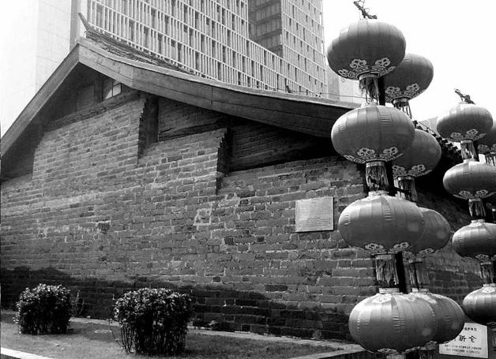
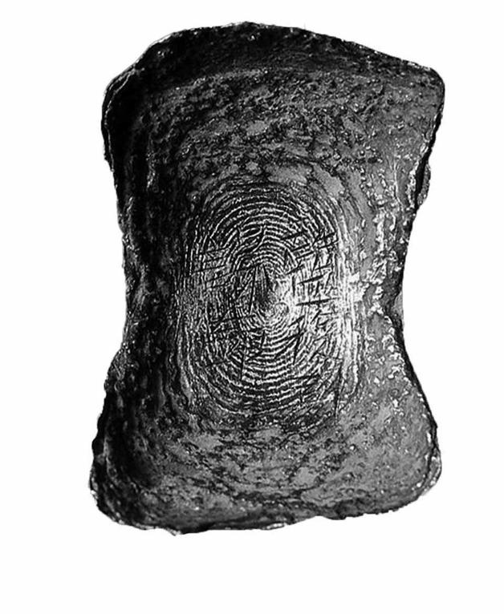

十
我们曾一再说，南京弘光政权坐拥东南“天下财赋所出之地”，物力充裕。那是相对而言。跟满清或大顺、大西比，它的条件算最好的。不过，此时江南今非昔比，一来战乱年代，生产较承平时大降，二来多年重赋，民力早剥光抽尽，三来上天示儆，《爝火录》载：“大旱，自五月至是（甲申十一月）不雨。”[112]也就是说，从朱由崧登基起，江南春、夏、秋三季无雨，旱情十分罕见。祁彪佳日记也屡次提到大旱，并记下自己作为地方官率民众祈雨的情形。八月二十八日，户科吴适奏言：“旧都草创，一事未举，万孔千疮，忧危丛集。又况畿南各省是处旱灾……”[113]这场大旱对弘光朝确如“屋漏偏遭连夜雨”，历来富甲之江南，在这一年其实是老牛喘汗，力所不支，民生倍艰。吴江诗人潘柽章描述说：“升斗竭所余，满腹辄废卮。”[114]靠乞食和别人周济弄点饭吃，所谓诗酒风雅，全然谈不上的。
即便朱由崧本人，我们也不能说他铺张奢侈。例如前面引述过乙酉年春他为自己办婚事，花了三四万两银子做礼冠，似乎相当破费，然而跟他父亲、老福王朱常洵当年相比，却只能称为寒酸。朱常洵的身份不过是亲王，连皇太子都不是，可万历皇帝为了给他办婚事，单单盖房子就花了二十八万两银子，婚礼上再用掉三十万两[115]，真是挥金如土。后来，为朱常洵“之国”，万历皇帝又赏田四万顷为他送行[116]，派出“舟千一百七十二艘、从卒千一百人”[117]的吓人船队，满载而往。所以，朱由崧以堂堂帝尊，结婚有几万两可用，草民虽不免咋舌，在他却已算是克奉节俭、委屈之至了。
当臣工们屡以国用不支提请凡事从简，压低甚至回绝他的某项开销时，朱由崧也不耐烦、也曾甩脸色，不过他的生活确实谈不上花天酒地，那倒不是因为其品质较父亲、祖父为佳，而是实在没有条件供给他那样的生活。他这个皇帝，当得比较憋屈。从登基之日起，财政问题就像绳索一样，始终缠绕着他。《监国诏》《即位诏》里那样的漂亮话，若在过去各朝，都是说说而已，对朱由崧却可不是什么漂亮话，而是必须面对的现实。
按李清开出的账单，弘光朝即便紧紧巴巴过日子，一年起码也有一百五十万两左右的窟窿。到处都在伸手要钱。史可法督师扬州启程前，上《请颁敕印给军需疏》，详细开列了大炮、鸟铳、刀枪等“各项军器”造买费用，要求授权他支配“贮淮扬之银”、“泊河湖之米”、“解北之银”，外加“二三十万金，携带前行”。[118]五月二十九日，时任巡抚应天安徽等处御史的左懋第，上疏索要长江战船，“即以水兵六千计之，亦须少舡三百余只，或募或造”，战船之外，如“水陆士卒、火药器械之类”所费，也应“次第计算，请命施行”。他没有提出具体数额，但想必该是一大笔钱。[119]乙酉年二月十三日，督饷侍郎申绍芳报告，两淮运使所押解的白银一万两，居然被总兵郑彩擅自“截留”。[120]同年三月二十一日，汝宁总兵刘洪起，“以缺饷撤兵还楚”[121]……
说是要“与民休息”，实际容不得“休息”。朝廷第一要务便是搞钱，我们不清楚承诺蠲免的各项是否果行，却看见了不少“开源”、“创收”的新办法、新品种。例如，增设酒税。“马士英奏沽酒，每斤定税一文。”[122]一旦增设，即遭争抢，插手部门多达十一个，户部尚书张有誉反映：“京城糟坊不满百，酒每斤税钱一文，既委府佐，又责五城，凡十一衙门，岂成政体！”[123]又如，增设洋税即出海税，“马士英疏请设洋税，开洋舡每只或三百两，或二百两，设太监给批放行，于崇明等县起税，如临清关例。”[124]又如，“纳银充贡”，“廪生纳银三百两，增生六百两，附生七百两。”[125]几个名词代表明代府州县官学学生的不同种类，廪生相当于正牌公费生，增生是扩招生，此外又额外增取、附于诸生之末者，称“附生”。古代学而优则仕，诸生将来前途是拔贡（进入国子监），然后有做官资格。所以“纳银充贡”实即变相卖官鬻爵。又“免童生应试”，“上户纳银六两，中户四两，下户三两”，溧阳知县李思谟因拒不执行这项政策，竟遭“特降五级”处分。[126]不久，变相卖官变成明码标价：
武英殿中书纳银九百两，文华中书一千五百两，内阁中书二千两，待诏三千两，拔贡一千两，推知衔二千两，监纪、职方万千不等……至乙酉二月，输纳富人授翰林、待诏等官，故更云“翰林满街走”也。[127]

北京南新仓。
因永乐迁都北京，致每年大量皇粮、俸米及其他物资，经漕运由江南运京，为此建京师十三仓，以为廒贮。今仅存南新仓。

明代“盐税课银”十两银锭。
课银，即税金。盐税，是朝廷就盐的产制运销所派之税。古代因盐产地所限以及运输不便，导致盐成为重要物资，往往伴随暴利，故历代均由国家专卖，为税收一大来源。
计六奇回忆说，这桩买卖还颇为兴隆：“予在书斋，今日闻某挟赀赴京做官矣，明日又闻某鬻产买官矣，一时卖菜儿莫不腰缠走白下（南京别称）。”[128]中国人普遍有做官梦，朝廷既然肯卖，想过一过官瘾的人也很踊跃。
此外，尚有许罪官输银自赎、命官员佐工（捐款）等着数，不一而足。过去，把“拜金主义”安在资本主义头上，好像只有资本家才掉在钱眼儿里。其实“封建主义”何尝不爱钱？眼下，明朝便毫不掩饰“金钱至上”的嘴脸，为了钱，礼义廉耻全顾不上了。
说来亦属无奈，该收的钱很多收不上来，例如，“两浙巡盐李挺欠课二十六万两”[129]，苏州、松江两府三年欠征三百十一万八千五百两，已征而未上缴九十五万六千多[130]。朱由崧急眼了，和朱家诸先帝一样，他开始疑心大臣办事不利，而派所信任放心的阉奴到地方催要。五月十五日，登基当天，即命太监王肇基前往浙江督催金花银，被高弘图劝阻，朱由崧毕竟刚从监国“转正”，不便坚持，乃“责成抚按严催，不许怠玩”。[131]过了几个月，他不再客气，“遣司礼监太监孙元德往浙闽，督催内库及户工二部一应钱粮”，“凡年额关税、两浙盐漕、备练商价、给引行盐，一概随解。”[132]
事情周而复始。仅数月，曾经以“与民更始”面目出现的弘光政权，便打回原形。有御史名彭遇，在《爝火录》中是个反面人物。他对马士英说：“岳武穆言大，文臣若不爱钱，高爵厚禄何以劝人？武臣必惜死，方养其身以有待。”他主动请缨“募兵十万”，别人问他“饷从何出”，答：“搜刮可办也。”[133]我观其言，倒不失坦率。“文官不爱钱，武将不怕死”是岳飞名言，彭遇敢于驳斥，道德上可鄙，证之以现实反而不错。至于“搜刮可办”，更是不折不扣的大实话。不搜刮怎么办？敢问有谁能够不搜刮而搞到银子？果不其然，我们看到后来户部正式奏请，在徽、宁等府“预征来年条银”[134]，朝廷又回到寅吃卯粮的老路上了。
八月，与弘光帝和太后她老人家母子团聚的同时，在内臣亲自坐镇督催钱粮的浙江，“东阳民变”复起。先是，“县令姚孙榘（《爝火录》作“姚孙棐”）借名备乱，横派各户输金”，当地一名叫许都的富户，被坐“万金”，却只拿出来几百两，姚孙榘大怒，“指为结党造反，执而桎梏之，时输金者盈廷，哄然沸乱”，在县衙当场把姚孙榘拖到堂下痛打，后陈子龙与许都友善，以免死说其自首而已，不料浙江巡抚左光先背信，诛杀许都等，复激事变，左光先调兵镇压，致东阳、义乌、汤溪数地民众“各保乡寨拒敌”，而官兵大败。[135]
此事后虽平息，却像一道丑陋的伤疤，刻在弘光朝面黄肌瘦的脸上。